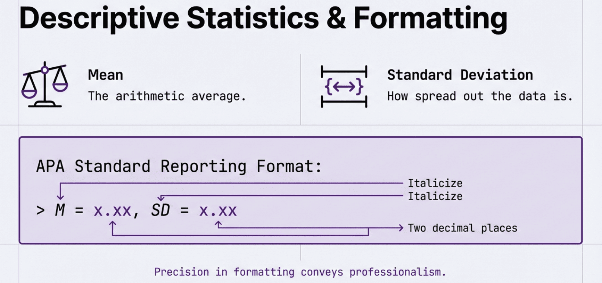
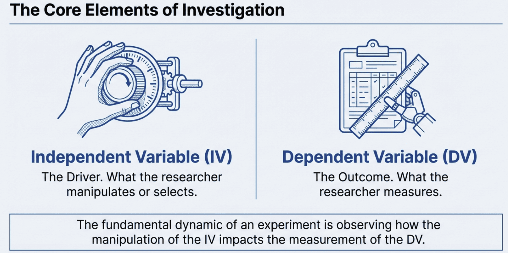
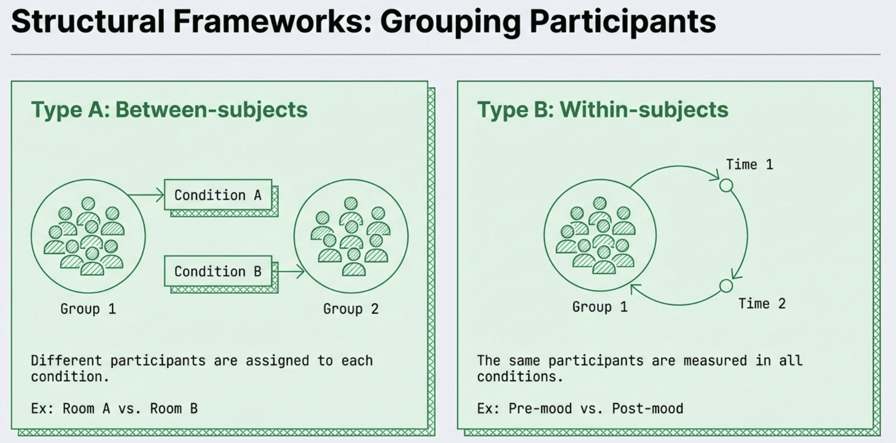
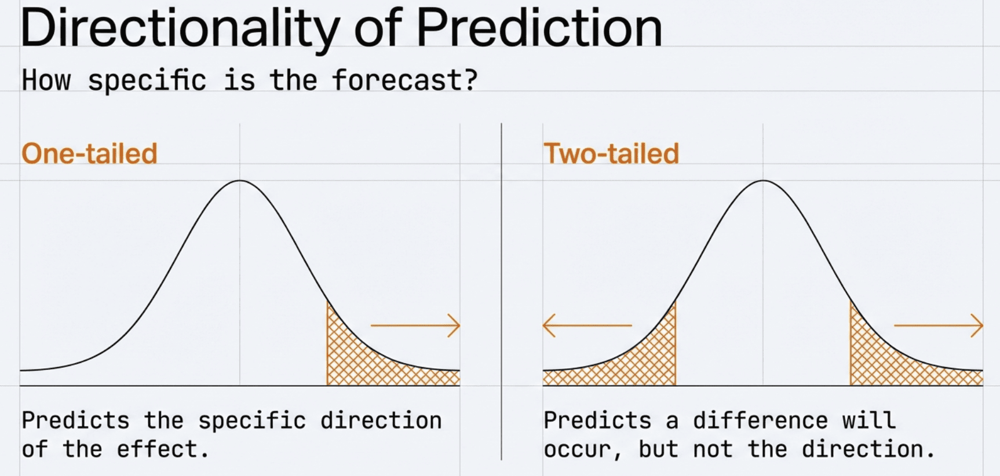
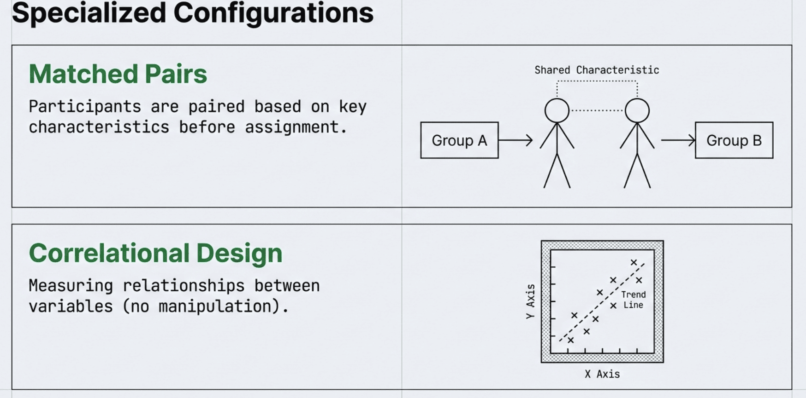
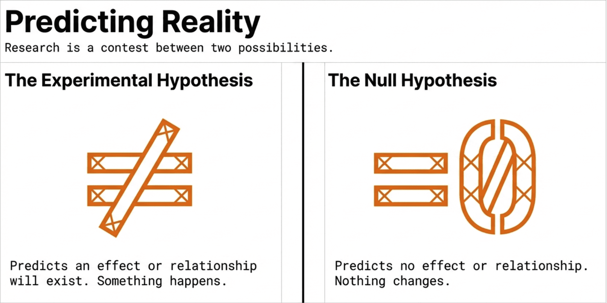
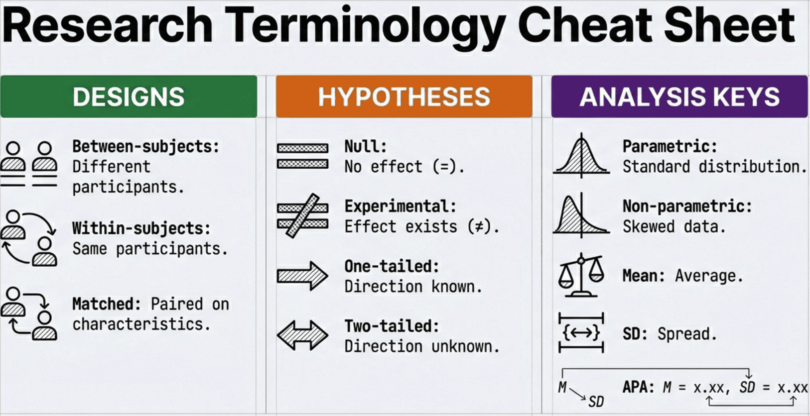

flowchart LR
Q[Research Question] --> H[Hypothesis]
H --> D[Design Study]
D --> C[Collect Data]
C --> A[Analyse Data]
A --> I[Interpret Results]
I --> Q
Your Data, Your Discoveries
PS50008A Week 12 | Research Design Framework
Gordon Wright
19 January 2026
Welcome to Week 12
Who Are We?
Dr Gordon Wright
Module Coordinator
Research: Social cognition, deception, dark personalities and interpersonal perception
Office hours: Thursdays 12:00-13:00
Dr Bence Palfi
Lecturer in the department and our second Lab instructor
Research: AI, Human-Computer Interactions, Meta-Science
What Is This Module?
Research Methods & Experimental Design
How psychologists:
- Ask questions about the mind and behaviour
- Design studies to answer those questions
- Collect and analyse data
- Draw valid conclusions
Why Research Methods?
The Problem with Common Sense
- “Opposites attract”
- “Birds of a feather flock together”
- Both can’t be true… can they?
Common sense often gives contradictory answers. Science provides a systematic way to find out what’s actually true.
Everyday Thinking vs Scientific Thinking
Everyday Thinking
- Based on personal experience
- Influenced by biases
- Accepts anecdotes as evidence
- Confirmation bias
- “I just know”
Scientific Thinking
- Based on systematic observation
- Controls for biases
- Requires replicable evidence
- Seeks disconfirmation
- “Let’s test it”
Why Should You Care?
- Evaluate claims you encounter daily
- Understand how psychological knowledge is created
- Essential for your dissertation
- Transferable skills for any career
- Required for postgraduate study
The Research Process
From Question to Knowledge
Step 1: The Research Question
Where do research questions come from?
- Curiosity about behaviour
- Gaps in existing research
- Real-world problems
- Theory testing
- Unexpected observations
Example: Do people lie more when texting than face-to-face?
Step 2: The Hypothesis
A hypothesis is a specific, testable prediction about what you expect to find.
Good hypothesis:
“Participants will tell more lies per conversation when communicating via text message compared to face-to-face.”
Not a hypothesis:
“I wonder if texting affects lying.”
Step 3: Design the Study
Key decisions:
- Who will you study? (participants)
- What will you measure? (variables)
- How will you measure it? (methods)
- What comparisons will you make? (design)
We’ll spend most of this module on this step.
Step 4: Collect Data
- Follow your plan precisely
- Treat participants ethically
- Record everything carefully
- Minimise errors and bias
Step 5: Analyse Data
Statistics are tools for finding patterns in data and determining whether those patterns are meaningful.
This is where R comes in — and what you’ll learn in the labs.
Step 6: Interpret Results
- What do the findings mean?
- Do they support the hypothesis?
- What are the limitations?
- What questions remain?
Then the cycle continues…
What You’ll Learn
Project Timeline
| Week | Milestone |
|---|---|
| 11 | See how much fun collecting data is! |
| 12-15 | Develop research question and design |
| — | Reading Week — Work on Research Plan |
| 16 | Research Plan due; Begin data collection |
| 17-18 | Data collection and initial analysis |
| 19-20 | Complete analysis; Develop write-up (term ends) |
| Spring Break | Individual report writing |
| Post-term | Research Report due Friday 1 May |
Lectures vs Labs
Lectures (Wednesday 10-12 from week 12)
- Concepts and theory
- Research design principles
- How to think about data
Labs (Thursday 10-12)
- Working with real data
- Building practical skills
- Applying design principles
- Learning about statistical test with R
They work together — lecture concepts, lab application.
Why R? (nothing to fear!)
- Free and open source
- Industry standard in data science
- Powerful data analysis and visualisation
- Reproducible research
- Employable skill
No Experience Required
We assume you’ve never programmed before. We start from zero.
Assessment Overview
Find an overview here
| Assessment | Weight | Deadline | Week |
|---|---|---|---|
| Research Plan | 20% | Fri 27 Feb 2026, 12 noon | 16 |
| MCQ Exam | 20% | Wed 11 Mar 2026, in lecture slot | 18 |
| EDS Assignment | 20% | Fri 20 Mar 2026, 12 noon | 20 |
| Research Report | 40% | Fri 1 May 2026, 12 noon | Post-term |
Before We Begin
Bookmark These
- Glossary — Look up any unfamiliar terms
- Self-Assessment Quizzes — Check your understanding
- Textbook Chapters — Go deeper on any topic
- Hypothes.is — Ask questions, see classmates’ annotations
- Assessment 1 Guidance — Start here for your Research Plan
Your data tell a story — let’s learn how to read it
Today’s Learning Objectives
By the end of this lecture, you will be able to:
- Identify Independent Variables (IV) and Dependent Variables (DV) in any study
- Distinguish between between-subjects, within-subjects, and correlational designs
- Write one-tailed and two-tailed hypotheses
- Calculate and interpret mean and standard deviation
The Big Idea
Critical Week
Today introduces ALL the terminology you need for your Research Plan.
Everything connects: Research Question → Variables → Design → Hypothesis
Act 1: What Are Data?
You generated these data (15 min)
What Did You Actually Do Last Week?
You completed 6 tasks plus pre/post surveys:
- Memory Test (Mind Palace)
- Reflex Test (Ruler catch)
- Time Warp (60 second estimation)
- Sixth Sense (Staring detection)
- Lady Luck (Random numbers)
- Frontal Lob (Throwing accuracy)
Each task generated NUMBERS — and numbers are what we analyse!
You Are a Data Point - a datum

Can you spot yourself?
Act 2: What’s Typical?
The simplest question (20 min)
When You Have Numbers, You Want to Know: What’s Normal?

The histogram shows how many people got each score.
The Mean: What’s Average?
Mean (\(\bar{x}\)) = Sum of all values ÷ Number of values
\[\bar{x} = \frac{\sum x_i}{n}\]
That’s what I mean!

For your memory scores: Mean = 6.2 words
But Wait… Same Mean, Different Stories

Same mean, but Group B is much more variable!
We Need to Measure Spread
Standard Deviation (SD) = How spread out the data are from the mean
- Low SD = Scores clustered together (consistent)
- High SD = Scores spread out (variable)
For your memory scores: SD = 2.14 words
The Key Insight
Remember This
A difference between means only matters if it’s big relative to the spread.
- Signal = difference between means
- Noise = variability within groups
- The question: Is the signal bigger than the noise?

Act 3: The Big Reveal
Lab A vs Lab B (25 min)
There Was a Hidden Manipulation
Last week you did the Memory Test (Mind Palace).
But here’s what you didn’t know…
The Secret
Lab A and Lab B saw different words!
The Manipulation
Lab A (Gordon)
Memorised abstract words:
- Justice
- Freedom
- Wisdom
- Courage
- Truth
Lab B (Bence)
Memorised concrete words:
- Chair
- River
- Mountain
- Apple
- Hammer
Let’s See the Results!

The Numbers
| Lab | Word Type | n | Mean | SD |
|---|---|---|---|---|
| Lab A | Abstract | 8 | 6 | 1.51 |
| Lab B | Concrete | 12 | 6.3 | 2.53 |
Difference: 0.3 words
Is this difference real or just chance?
Join us in week 14 and we will put that to the t-test!
Now Let’s Introduce the Terminology
Independent Variable (IV): What the researcher manipulates or controls
Dependent Variable (DV): What the researcher measures — the outcome

In the memory experiment:
- IV = Word type (abstract vs concrete)
- DV = Number of words recalled (0-10)
Design Type: Between-Subjects
Between-subjects design: Different participants in each condition

- Lab A people only saw abstract words
- Lab B people only saw concrete words
- You couldn’t be in both labs!
Why? Between = different people in each group
Writing a Hypothesis
Experimental hypothesis (H₁): Predicts an effect or difference
Null hypothesis (H₀): Predicts no effect or no difference
For the memory experiment:
- H₁: Concrete words will be easier to remember than abstract words
- H₀: There will be no difference in recall between word types
One-Tailed vs Two-Tailed
One-tailed: Predicts the direction of the effect
Two-tailed: Predicts a difference but not which direction
- One-tailed: “Concrete words will be better than abstract” (predicts direction)
- Two-tailed: “Word type will affect memory” (no direction)

Act 4: Same Person, Different Conditions
Within-subjects design (20 min)
The Pre-Post Mood Survey
Remember you rated your mood at the start AND end of the session?

This Is Within-Subjects Design
Within-subjects design: The same participants measured in all conditions
- Pre-mood and post-mood came from the same person
- You’re being compared to yourself
Why Is This Powerful?
The Power of Within-Subjects
Each person is their own control!
Individual differences are controlled:
- If your pre-mood was 5 and post-mood was 7…
- You improved by 2 points
- We don’t need to worry about other people’s baseline moods
Act 5: Relationships, Not Differences
Correlational design (15 min)
Self-Rating vs Actual Performance
Before the throwing task, you rated how good you thought you’d be.
Question: Do people know themselves?

This Is Correlational Design
Correlational design: Measuring the relationship between two variables — no manipulation
- Variable 1: Self-rating (1-10)
- Variable 2: Actual accuracy (%)
Key Point
There is no IV in a correlational design!
The Critical Warning
Say It With Me
Correlation ≠ Causation
Finding a relationship does NOT mean one variable causes the other.
Even if self-ratings predict performance, we can’t say self-ratings cause good performance.

Act 6: Was It Just Luck?
The null hypothesis (20 min)

The Sixth Sense Task
You tried to detect if someone was staring at you.
- 6 trials
- Guessed “staring” or “not staring”
If you’re just guessing: You’d expect 3 out of 6 right (50%)
Your Results

Some People Got 5/6 or 6/6!
The Question
Does getting 5 or 6 right mean you have a sixth sense?
Not necessarily!
If you flip a coin 6 times, sometimes you get 5 or 6 heads just by luck.
The Null Hypothesis
Null hypothesis (H₀): The result is due to chance, not a real effect.
For the sixth sense:
- H₀: People are just guessing (performance = 50%)
- H₁: People can detect staring (performance ≠ 50%)
Your Dice Rolls

Your Coin Flips

Why Statistics?
With 20 people, some will get lucky:
- A few might get 5/6 or 6/6 just by chance
- Dice won’t land perfectly evenly
- Coins won’t be exactly 50/50
Statistics helps us ask: How surprising is this result? See week14!
The Framework
Putting it all together (5 min)
The Research Design Decision Tree
Step 1: Is there manipulation?
- Yes → Experimental design
- No → Correlational design
Step 2: If experimental, same or different people?
- Same people → Within-subjects
- Different people → Between-subjects
The Quick Check
No IV? → Correlational
IV + same people? → Within-subjects
IV + different people? → Between-subjects
DataLab Summary
| Task | Design | IV | DV |
|---|---|---|---|
| Memory | Between | Word type | Recall (0-10) |
| Pre/Post Mood | Within | Time | Rating (1-10) |
| Frontal Lob | Within | Hand | Accuracy (%) |
| Sixth Sense | vs Chance | — | Hits (0-6) |
| Self vs Actual | Correlational | — | — |
The Vocabulary You Now Have
Check These Off
Connecting to Assessments
| Assessment | What You Learned Today |
|---|---|
| Research Plan | ALL terminology — you can start planning! |
| MCQ Exam | Design identification, IV/DV, hypothesis types |
| EDS Assignment | Calculating means and SDs, identifying designs |
| Research Report | Method section structure |
What’s Next?
Thursday Lab: Apply this framework to YOUR DataLab data
- Identify designs, IVs, DVs
- Calculate means and SDs
- Practice writing hypotheses
Focus on conceptual understanding!
Questions?
Remember
- You generated this data
- Every number came from something you did
- The framework helps you tell the story
See You Thursday!
